FREINS
 Changement pistons et joints Jaguar XJ6
Changement pistons et joints Jaguar XJ6
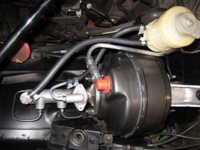
Refection maitre cylindre
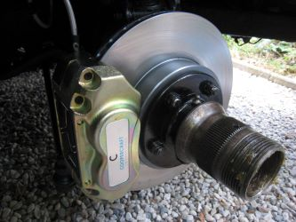
Upgrade étrier disques AV Jaguar MK2
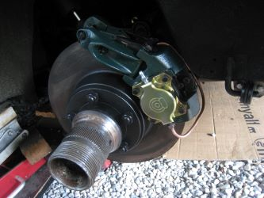
Upgrade étrier disques AR Jaguar MK2
Moteur
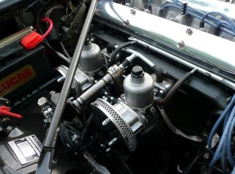
Polissage carbu cache arbres
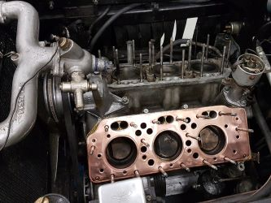
Refection moteur Lancia Aurélia B 24
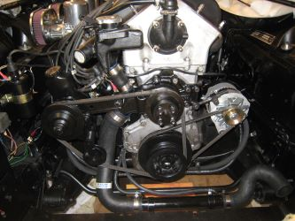
Refection circuit refroidissement Jaguar
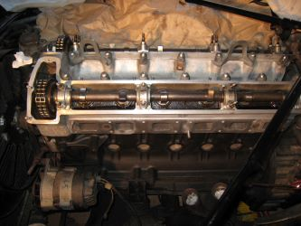
Pastillage soupapes Jaguar
Plasticage pour contrôle des jeu du villbrequin
Refection Pompe DA
Remontage bielles pistons Lancia Aurélia B24
Carrosserie
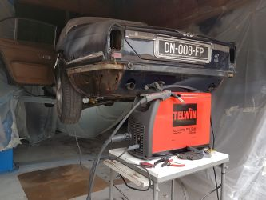
Réfection ailes AR Jaguar
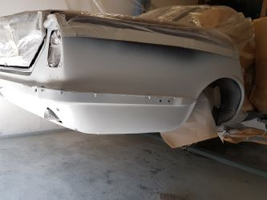
Changement ailes AR Jaguar
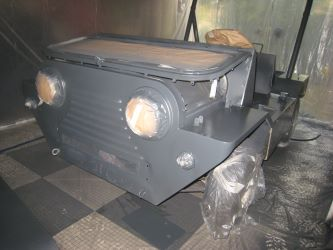
Peinture Rubon
Polissage lustrage carrosserie
Carburateur
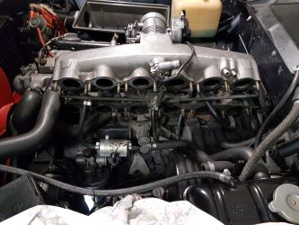
Réfection injection BMW E9
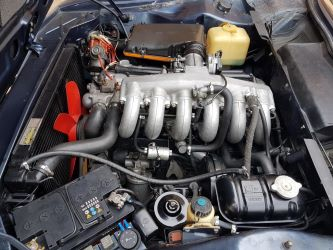
Nettoyage Injecteurs ultrasons BMW E9
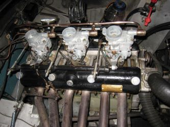
Refection et réglage carbus AC Bristol
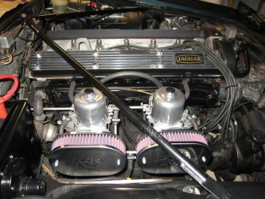
Refection réglage carbus Jaguar
Electricité
 Renovation circuit électrique Jaguar
Renovation circuit électrique Jaguar
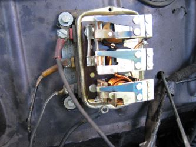
Refection régulateur Jaguar XK 120 1952
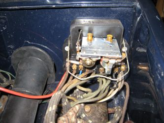
Refection régulateur Jaguar XK 120 1952
 Upgrade Allumage électronique sur Jaguar XJ
Upgrade Allumage électronique sur Jaguar XJ
Pont
 Réfection train AV Jaguar XJ6 S1
Réfection train AV Jaguar XJ6 S1
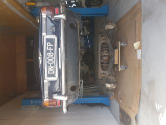
Réfection pont AR Jaguar XJ6 S1
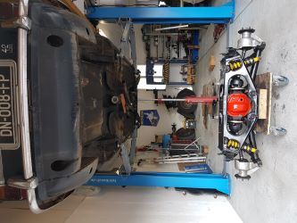
Réfection pont AR Jaguar XJ6 S1
Réfection pont AR Jaguar XJ6 S1
Refection pont AR Jaguar